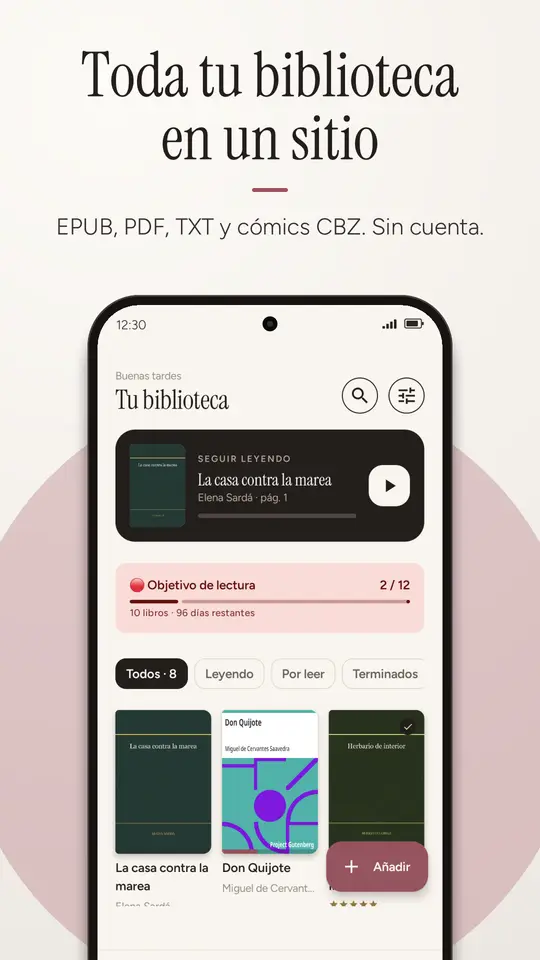
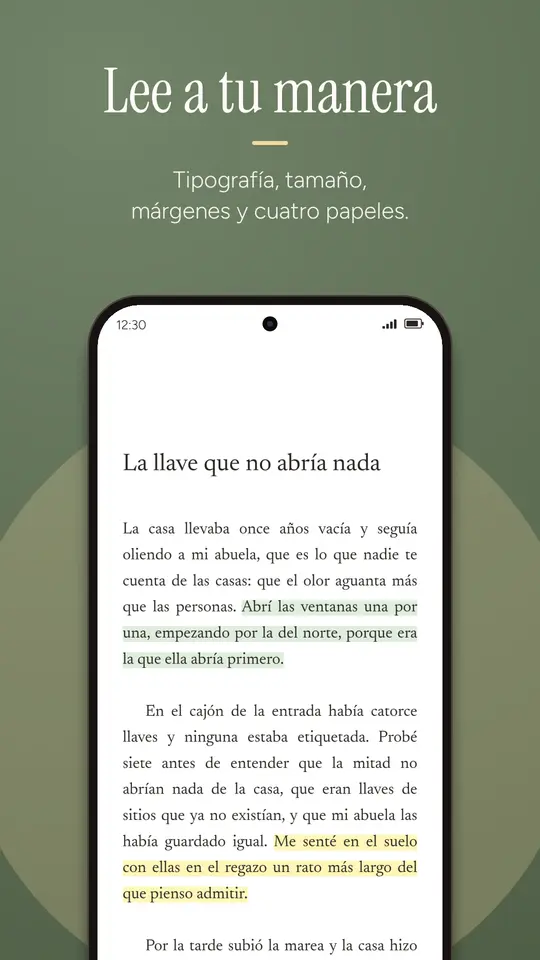

Cómo abrir un archivo EPUB en Android
Te han pasado un libro por WhatsApp, lo has descargado de una biblioteca o lo tenías en el ordenador, lo tocas en el móvil… y Android dice que no tiene ninguna app para abrirlo. Es normal y tiene arreglo en un minuto.
Android no trae ningún lector de EPUB. Instala uno (por ejemplo Balda, gratis y sin cuenta), vuelve a tocar el archivo y elige «Abrir con Balda». Si el archivo termina en .acsm o el libro lo compraste con DRM, no es un problema del lector: mira si el EPUB no se abre.
Por qué Android no abre los EPUB
Un EPUB es, por dentro, un pequeño sitio web empaquetado: capítulos en HTML, una hoja de estilos, las tipografías del libro y las imágenes, todo metido en un ZIP. Android sabe abrir fotos, vídeos y PDF, pero no trae ninguna app que entienda ese paquete y lo pagine como un libro. Por eso, al tocarlo, el sistema te ofrece buscar una app en Play Store o te dice directamente que no puede abrirlo.
La ventaja del EPUB frente al PDF es que el texto se adapta a la pantalla: puedes subir el tamaño de letra y el libro se vuelve a maquetar, en lugar de obligarte a hacer zoom y desplazarte de lado a lado.
Abrir un EPUB paso a paso
Primero instala Balda desde Google Play. No pide registrarte ni iniciar sesión. Después, elige el camino que corresponda a dónde está tu libro:
Si el libro te llegó por WhatsApp, Telegram, Gmail o Drive
- Abre el chat o el correo y toca el archivo
.epub(si no está descargado, descárgalo primero). - Android te preguntará con qué app abrirlo: elige Balda. Si no te pregunta, usa el menú ⋮ → Abrir con o Compartir → Balda.
- El libro se copia a tu biblioteca y se abre directamente por la primera página. La próxima vez lo tendrás ahí, aunque borres el chat.
Si el libro está en Descargas o en otra carpeta del móvil
- Abre Balda y pulsa el botón «Añadir» (abajo a la derecha).
- Se abre el selector de archivos de Android. Busca el libro en Descargas o donde lo tengas. Puedes marcar varios a la vez manteniendo pulsado el primero.
- Pulsa Seleccionar. Balda los importa uno a uno y al final te dice cuántos se han añadido y si alguno ya estaba.

Si guardas muchos libros en una carpeta
Si sueles pasar libros desde el ordenador o los descargas siempre al mismo sitio, es más cómodo darle a Balda acceso a esa carpeta una vez:
- En Balda, ve a Ajustes → Carpetas de libros → Añadir carpeta.
- Elige la carpeta. Android no deja dar acceso a Descargas entera, pero sí a una carpeta dentro, por ejemplo
Descargas/LibrosoDocumentos/Libros. - Desde entonces, cada vez que abras Balda revisará esa carpeta y añadirá los libros nuevos sin que hagas nada.
Balda solo mira las carpetas que tú le das. No recorre el resto del móvil, y el archivo original no se toca: si borras un libro en Balda, el de tu carpeta sigue ahí.
Ajustar la lectura a tu gusto
Con el libro abierto, toca el centro de la pantalla para ver los mandos. Desde ahí puedes cambiar:
- Tipografía: la que trae el libro (por defecto), una serif, una sans o una con más espacio entre letras pensada para la dislexia.
- Tamaño, interlineado y márgenes, con el texto reflujándose al momento.
- Papel: día, sepia, noche y negro puro para pantallas OLED.
- Páginas o scroll continuo, y pasar página con los botones de volumen.
También tienes el índice del libro, búsqueda, subrayados en cinco colores con notas, y lectura en voz alta que sigue sonando con la pantalla apagada y se controla desde los auriculares.

Otras opciones para leer EPUB en Android
Balda no es la única opción, y conviene saber qué ofrece cada una:
| App | Cuenta | Dónde quedan tus libros | Para quién |
|---|---|---|---|
| Google Play Libros | Sí, de Google | Se suben a tu biblioteca en la nube de Google | Quien quiere leer el mismo libro en móvil, tablet y web |
| Lectores clásicos (ReadEra, Moon+ Reader…) | No | En el móvil | Quien quiere muchísimas opciones y formatos |
| Balda | No | En el móvil; no salen de él | Quien quiere un lector cuidado con una estantería donde colocar sus libros, estadísticas y metas de lectura |
Si necesitas leer MOBI o FB2, hoy un lector clásico te servirá mejor: Balda lee EPUB, PDF, TXT y cómics CBZ, y nada más.
Si el EPUB no se abre
El archivo termina en .acsm
Un .acsm no es el libro: es un pequeño vale de descarga que dan algunas tiendas y bibliotecas con préstamo digital. Hay que abrirlo con una app compatible con Adobe DRM (Adobe Digital Editions en el ordenador, o la app que te indique tu biblioteca), que descarga el libro protegido. Esos libros solo se leen en apps con licencia de Adobe, así que Balda no puede abrirlos.
El libro tiene DRM
Los libros comprados en Kindle, Kobo o Apple Books suelen ir protegidos y solo se leen en la app de su tienda. Los EPUB sin DRM (de editoriales que no lo usan, de Project Gutenberg, de tiendas como Humble Bundle o de muchos autores independientes) se abren en cualquier lector.
Balda dice que no puede abrirlo
- Descarga incompleta: vuelve a descargarlo. Un EPUB cortado a medias no se puede leer.
- Extensión cambiada: a veces el archivo llega como
libro.epub.zipolibro.zip. Renómbralo a.epubdesde la app Archivos. - No es un EPUB: si es
.mobio.azw3(formato de Kindle) y no tiene DRM, puedes convertirlo a EPUB en el ordenador con Calibre, que es gratuito. - Es un cómic en CBR: mira cómo pasar un CBR a CBZ.
Preguntas frecuentes
¿Puedo leer EPUB sin conexión a internet?
Sí. Una vez el libro está en Balda, se lee sin conexión. La app no necesita internet para nada relacionado con tus libros.
¿Balda es gratis?
Sí. Tiene anuncios en la biblioteca y otras pantallas de navegación, y a veces uno a pantalla completa al cerrar un libro. Nunca mientras lees.
¿Cómo paso libros del ordenador al móvil?
Conecta el móvil por USB, elige «Transferencia de archivos» y copia los EPUB a una carpeta como Documents/Libros. Después dale acceso a esa carpeta en Ajustes → Carpetas de libros y Balda los añadirá solos. También puedes subirlos a Drive y abrirlos desde allí con «Abrir con».
¿Qué pasa con mis libros si cambio de móvil?
En Ajustes → Copia de seguridad puedes guardar un archivo .zip con tu biblioteca, progreso, subrayados y, si quieres, los propios libros. Lo guardas donde elijas (Drive, el ordenador…) y lo restauras en el móvil nuevo.
¿Puedo leer también PDF?
Sí: Balda abre PDF con zoom de dos dedos y, en Android 15 o superior, búsqueda de texto. Para documentos escaneados o con mucha maquetación el PDF se ve tal cual; para novelas, el EPUB es más cómodo.
Abre tu primer EPUB
Balda es gratis, no pide cuenta y tus libros no salen del móvil. Para Android 8 y superior.
En Google PlayDescargar gratis